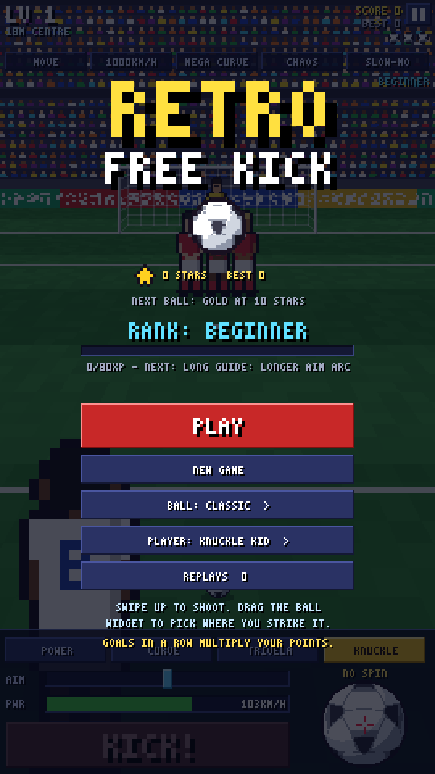
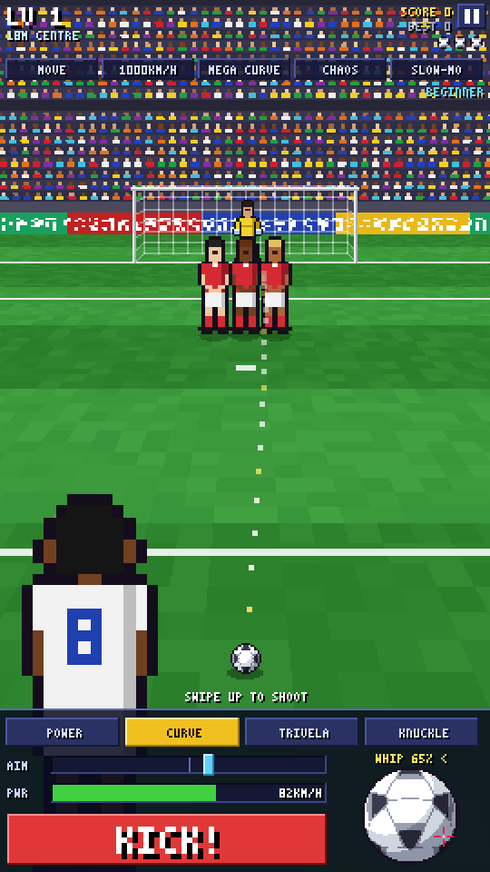
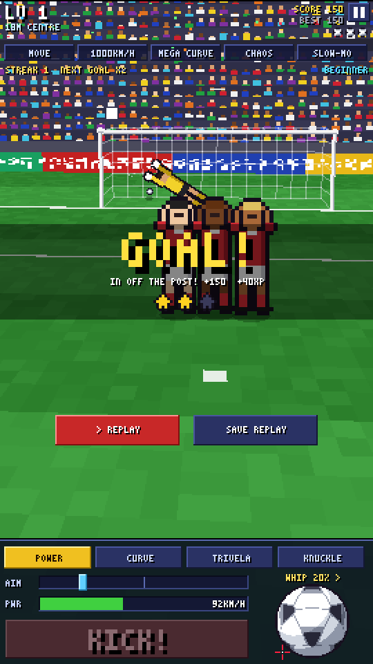
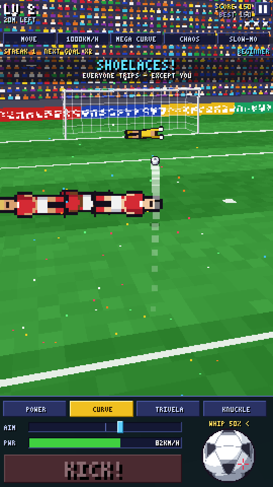
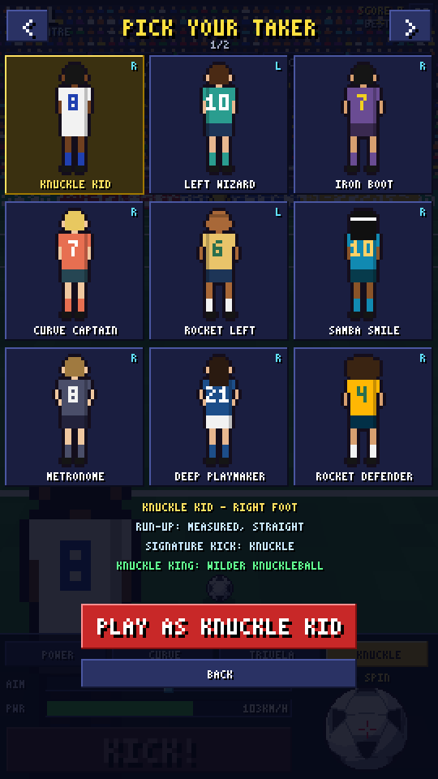

BEND IT. DIP IT. KNUCKLE IT.
A free-kick game for Android and your browser. 16-bit pixels, real-ish ball physics, a keeper who learns your tricks, and 33 ways for things to go stupidly wrong.
Free. Android 7 or newer. No ads. Android will warn you about the APK, here's why. Older versions: all releases.





WHAT'S IN IT
4 KICKS
Power, curve, trivela, knuckle. You choose where your boot hits the ball, and it actually changes the flight.
A KEEPER WITH A MEMORY
Reads the angle, takes a second look at curlers, and notices if you always go top left.
33 CHAOS EVENTS
Turn on CHAOS and a dog heads your shot, a cat scares the keeper the wrong way, or the wall goes on strike.
18 MADE-UP LEGENDS
Each has a preferred foot, stance, run-up and perk. The names are made up on purpose. More on that below.
REPLAYS + SLOW-MO
Save your best goals and rewatch them, or play a whole shot in slow motion.
BEGINNER TO LEGEND
Seven ranks with a perk each, plus stars, streaks and balls to unlock.
ABOUT THE GAME
Retro Free Kick is a hobby project, not a studio product. There's no roadmap and no release schedule. I update the game whenever I get a new idea, so things get added, changed, and usually get weirder.
Every update goes on the releases page, and the DOWNLOAD button always gets the newest one. The browser version is always up to date.
Got an idea? Tell me. It might end up in the game.
HOW IT WAS MADE (THE HONEST VERSION)
Short version: I didn't write the code. An AI did. I brought the ideas, the phone and the complaints.
Long version: the game was built in three days, 20 to 22 November 2026, in one long chat with Claude Code, Anthropic's AI coding agent. I described what I wanted in plain English, typos included. It wrote the code. GitHub built the APK. I played it on my phone and told it what sucked. Repeat. That's the whole studio.
THE ACTUAL CHAT, THE GOOD BITS
make a retro pixel free-kick game for android
Version one. It worked, mostly.
i can't tab to start
The start screen ignored taps. Fixed.
make the shooting power go up to like 1000km/h and the curve make it insanely curve
Done. It's dumb and it's staying.
even phone with android 7 can play
It got optimised.
it's laggy now since i told you to make a new optimization system
The optimisation made it laggy. Fixed for real the second time.
please don't make the goalkeeper has prime buffon level of save
The keeper got worse on purpose. You're welcome.
I'm having a hard time scoring with knuckle ball it's so hard
It went over the bar 41% of the time. Now it's 12%.
i heard that you can get sue for using someone patent
The aim assist got deleted, just in case.
what we turn the aim assist into something like a strong wind a bird hit the ball etc just random bs
And that's how CHAOS mode was born.
i don't see any vfx or sound or the ball go into the net in chaos mode just the announcement
Fair. Every event got its own effect and sound.
add more random bs like everyone trip over their shoe laces except the free kick tacker
Done. There's also a cat now.
CONFESSIONS
- The first heroes had real footballers' names. Using a famous person's name to sell your thing can get you in trouble even without their face. So all 18 got made-up names and made-up kits. Their run-ups are inspired by famous free-kick styles. Their names are not.
- There used to be an aim assist that steered every shot into the net. I got nervous about patents and deleted it. I don't actually know if anyone has a patent on that. I just didn't want to find out.
- The knuckleball is part science, part fudge. A real knuckleball wobbles because air flows weirdly around a ball with no spin. Ours fakes it with a tuned wobble and a sudden drop, adjusted until it felt right and could actually be scored.
THE TECH, NO BUZZWORDS
- One HTML file and one 128 KB JavaScript file. No game engine, no framework, no libraries.
- Every sprite is drawn by code when the game starts. Every sound is synthesized live by your browser. There is no music.
- The game draws at 270 x 480 pixels and scales up. That's why it looks pixelated, and why it runs on old phones.
- Physics runs 240 steps a second: gravity, air drag and the Magnus effect (spin makes the ball curve). It's deterministic, so a saved replay is about 300 bytes of inputs instead of a video.
- The Android app is a WebView. Translation: it's the browser version in an app-shaped box.
- GitHub Actions builds the APK on every change, but only after 22 physics tests pass. They check that the ball behaves like a ball and that every level can actually be scored.
WHAT'S BAD
- The APK is debug-signed. Android and Play Protect will warn you, and it's not on the Play Store.
- No music. Just sound effects.
- It's been tested on my phone and in an automated browser. That's it. Your phone might disagree.
- No iPhone app. The browser version might work on an iPhone. Nobody has checked.
- Your progress lives on your device. Clear the app data or your browser storage and it's gone. No accounts, no cloud saves.
- It's three days old, so there are bugs nobody has found yet. Tell me about them.
INSTALLING THE APK
- On your Android phone (7.0 or newer), tap DOWNLOAD APK.
- Open the file. If Android asks, allow your browser to install unknown apps.
- If Play Protect warns you, that's because of the debug signature and because it's not from the Play Store. You can install anyway (sometimes it's under "More details"), or skip all this and play in the browser.
The full source is public, so anyone can check what the app does.
PRIVACY
No ads. No analytics. No cookies. No accounts. This site doesn't load anything from other servers. GitHub hosts it, so GitHub keeps its normal server logs. The game saves your progress on your device and nowhere else.